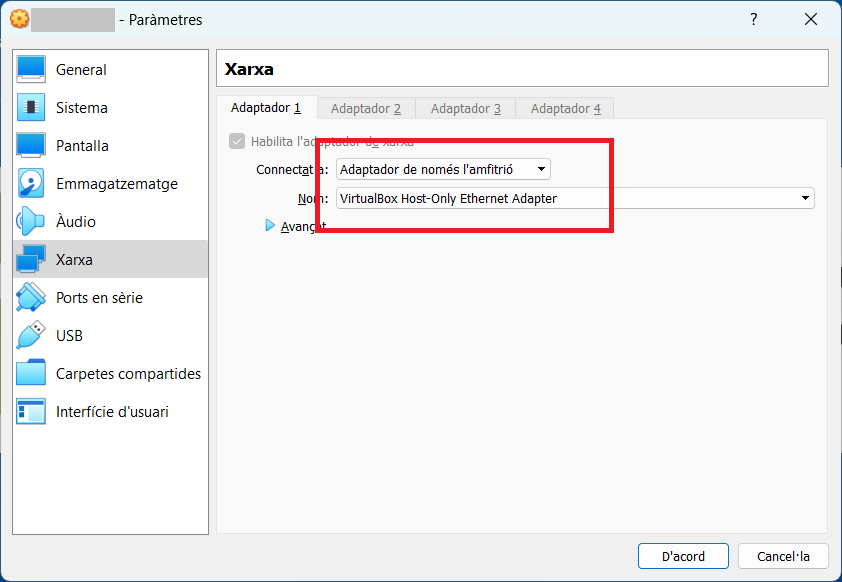

En començar l'activitat la configuració de l'adapatador de xarxa virtual ha d'estar com es mostra a continuació:

192.168.**<NumeroMesNaixmanentAlumne>*.1*
192.168.**<NumeroMesNaixmanentAlumne>*.100*
IIS?En el servidor, descarregats localment teniu els següents fitxers:
php-7.4.33-nts-Win32-vc15-x64.zip (24,92 MB (26.132.214 bytes)).IIS.PHP.